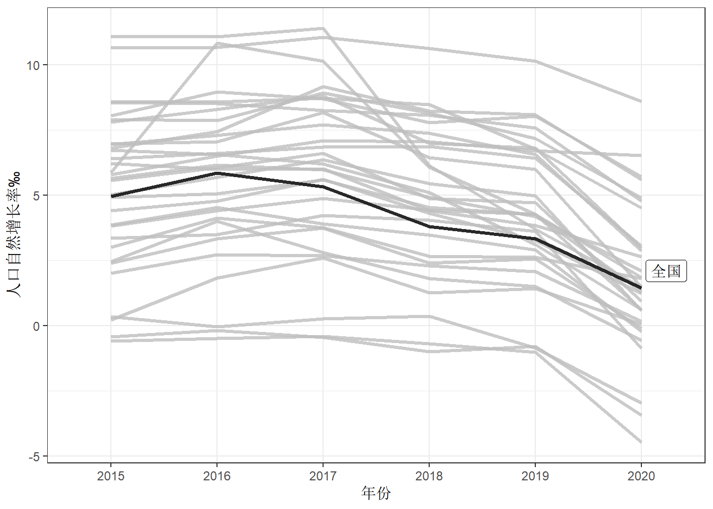
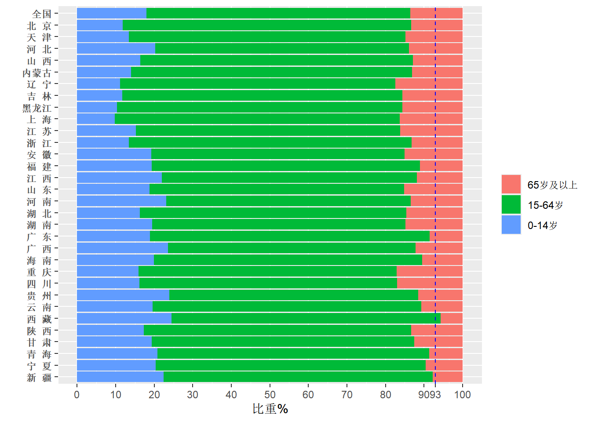
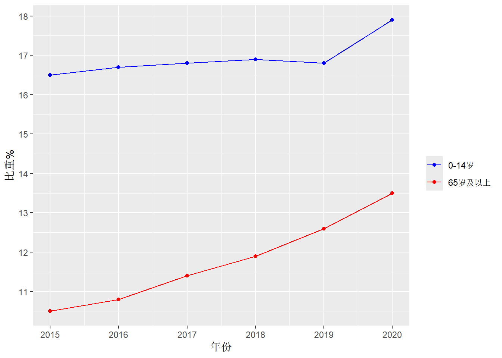
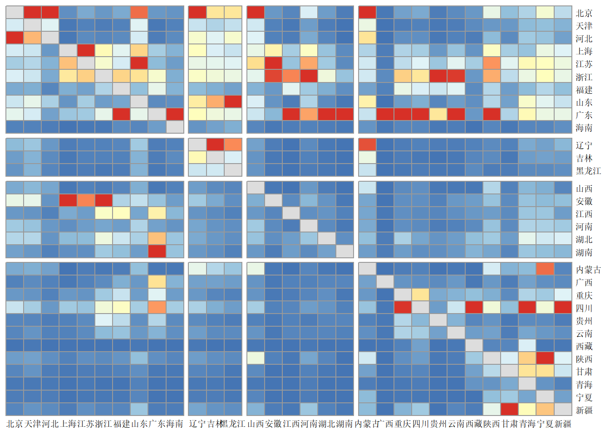

9.2 全国人口状况
9.2.1 人口自然增长率
需要额外导入的包：
绘制全国及各省市的自然增长率轮廓图。
## province ngr_15 ngr_16 ngr_17 ngr_18 ngr_19 ngr_20
## 1 全国 4.96 5.86 5.32 3.81 3.34 1.445681
## 2 北 京 3.01 4.12 3.76 2.66 2.63 1.800000
## 3 天 津 0.23 1.83 2.60 1.25 1.43 0.070000
## 4 河 北 5.56 6.06 6.60 4.88 4.71 0.940000
## 5 山 西 4.42 4.77 5.61 4.31 3.27 1.240000
## 6 内蒙古 2.40 3.34 3.73 2.40 2.57 -0.100000# 数据预处理，为“全国”添加高亮标签
growth_df <- growth_df %>% mutate(highlight=c('1',rep('0',times=31)))
growth_df <- growth_df %>% pivot_longer(
cols = c(2:7),names_to = 'year',values_to = 'value'
)
ggplot(growth_df)+
geom_line(aes(x=year,y=value,group=province),
linewidth=1.2,alpha=0.8)+
gghighlight(highlight=='1',use_direct_label = T,
label_key = province,use_group_by = F)+
theme_bw()+
labs(y='人口自然增长率‰',x='年份')+
scale_x_discrete(labels = c('2015','2016','2017','2018','2019','2020'))
图 9.1: 全国及各省市的自然增长率轮廓图
9.2.2 年龄结构
## province young middle old
## 1 全国 17.97 68.50 13.52
## 2 北 京 11.84 74.86 13.30
## 3 天 津 13.47 71.77 14.75
## 4 河 北 20.22 65.85 13.92
## 5 山 西 16.35 70.74 12.90
## 6 内蒙古 14.04 72.90 13.05age_demo <- age_df %>% pivot_longer(
cols = 2:4,names_to = 'age',values_to = 'value'
)
age_demo$age <- factor(age_demo$age,levels = c('old','middle','young'))
age_demo$province <- factor(age_demo$province,levels = unique(as.vector(age_df$province)))
age_demo %>% ggplot(aes(x=fct_rev(province),y=value,fill=age))+
geom_bar(stat = 'identity')+
labs(y='比重%',x='',fill='')+
theme(axis.text.y = element_text(face='bold'))+
geom_hline(yintercept = 93,linetype='dashed',color='blue')+
scale_y_continuous(breaks = c(0,10,20,30,40,50,60,70,80,90,93,100))+
scale_fill_discrete(labels=c('65岁及以上','15-64岁','0-14岁'))+
coord_flip()
图 9.2: 全国及各省市年龄结构
## year young middle old gross_dep young_dep old_dep
## 1 2015 16.5 73.0 10.5 36.96755 22.63329 14.33425
## 2 2016 16.7 72.5 10.8 37.90000 22.90000 15.00000
## 3 2017 16.8 71.8 11.4 39.27577 23.39833 15.87744
## 4 2018 16.9 71.2 11.9 40.44104 23.67523 16.76580
## 5 2019 16.8 70.6 12.6 41.50000 23.80000 17.80000
## 6 2020 17.9 68.6 13.5 45.90000 26.20000 19.70000age_series <- age_series %>% pivot_longer(
cols = c(2,4),names_to = 'age',values_to = 'value'
)
age_series %>% ggplot()+
geom_line(aes(x=year,y=value,group=age,color=age))+
geom_point(aes(x=year,y=value,group=age,color=age))+
scale_y_continuous(breaks = seq(10,18,1))+
scale_color_manual(values = c('blue','red'),
limits=c('young','old'),
labels=c('0-14岁','65岁及以上'))+
labs(x='年份',y='比重%',color='')
图 9.3: 一般年龄结构
9.2.3 人口流动
需要导入额外的包：
## province 北京 天津 河北 山西 内蒙古 辽宁 吉林 黑龙江 上海 江苏 浙江 安徽
## 1 北京 0 6809 60188 17719 8200 13080 8214 16134 2241 6327 3181 8262
## 2 天津 7417 0 21018 5354 3278 3792 3129 7121 383 1907 1000 3003
## 3 河北 23741 5064 0 6023 5240 5921 4466 11763 499 2822 1670 3947
## 4 山西 2959 1065 7134 0 2454 1256 777 1209 496 2024 936 1669
## 5 内蒙古 2970 937 6552 6866 0 4847 3239 4956 292 1294 693 1239
## 6 辽宁 4003 1317 5158 1897 7685 0 13076 21716 783 2042 1264 2528
## 福建 江西 山东 河南 湖北 湖南 广东 广西 海南 重庆 四川 贵州 云南 西藏 陕西
## 1 2494 3514 21008 28004 7460 4671 4164 1635 650 2682 7991 1867 2055 274 6301
## 2 723 1008 8357 8077 1776 967 733 1030 271 729 2412 1389 925 179 1326
## 3 1198 1524 7418 10851 3646 1668 1345 756 423 1567 4275 1299 1317 89 2785
## 4 959 674 3231 7463 1899 798 753 347 323 1267 4151 836 721 64 3960
## 5 534 490 4101 3539 1148 586 551 229 110 521 2172 434 415 25 5179
## 6 982 667 4908 4647 1131 920 1396 986 268 675 2277 1652 828 125 946
## 甘肃 青海 宁夏 新疆 总流入 总流出 净流出
## 1 5666 541 1005 2306 254643 126748 -127895
## 2 2912 382 384 1292 92274 40762 -51512
## 3 1951 463 427 949 115107 193487 78380
## 4 1132 350 315 424 51646 112519 60873
## 5 4825 388 1991 399 61522 63224 1702
## 6 1241 283 243 1319 86963 94028 7065group <- c( '东部地区',
'东部地区','东部地区','中部地区','西部地区','东北地区',
'东北地区','东北地区','东部地区','东部地区','东部地区',
'中部地区','东部地区','中部地区','东部地区','中部地区',
'中部地区','中部地区','东部地区','西部地区','东部地区',
'西部地区','西部地区','西部地区','西部地区','西部地区',
'西部地区','西部地区','西部地区','西部地区','西部地区'
)
flow_demo <- flow_df %>% mutate(region=group) %>% relocate(region,.before = province)
flow_demo$region <- factor(flow_demo$region,levels = c('东部地区','东北地区','中部地区','西部地区'))
flow_demo <- flow_demo %>% arrange(region)
flow_demo <- flow_demo[,c(1,2,match(flow_demo$province,colnames(flow_demo)[3:33])+2)]
flow_mat <- as.matrix(flow_demo[,3:33] %>% mutate(across(1:31,~(.-min(.))/(max(.)-min(.)))))
rownames(flow_mat) <- colnames(flow_mat)
diag(flow_mat) <- NA
#会有一堆警告，没找到原因，猜测是编码问题，不影响正常使用
pheatmap(flow_mat,cluster_rows = F,cluster_cols = F,
angle_col = 0,legend = F,fontsize_row = 8 ,fontsize_col = 8,
gaps_row = c(10,13,19),gaps_col = c(10,13,19))
图 9.4: 全国人口流动